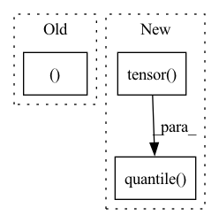

Pattern ID :11985

Before Change
b = torch.randn(4)
c = torch.tensor(0.5)
return (
torch.argmax(a),
torch.argmin(a),
torch.amax(a),
torch.amin(a),
torch.aminmax(a),
torch.all(a),
torch.any(a),
torch.max(a),
a.max(a),
torch.max(a, 0),
torch.min(a),
a.min(a),
torch.min(a, 0),
torch.dist(a, b),
torch.logsumexp(a, 0),
torch.mean(a),
torch.mean(a, 0),
torch.nanmean(a),
torch.median(a),
torch.nanmedian(a),
torch.mode(a),
torch.norm(a),
a.norm(2),
torch.norm(a, dim=0),
torch.norm(c, torch.tensor(2)),
torch.nansum(a),
torch.prod(a),
torch.quantile(a, torch.tensor([0.25, 0.5, 0.75])),
torch.quantile(a, 0.5),
torch.nanquantile(a, torch.tensor([0.25, 0.5, 0.75])),
torch.std(a),
torch.std_mean(a),
torch.sum(a),
torch.unique(a),
torch.unique_consecutive(a),
torch.var(a),
torch.var_mean(a),
torch.count_nonzero(a),
)
After Change
torch.norm(c, torch.tensor(2)),
torch.nansum(a),
torch.prod(a),
torch.quantile(a, torch.tensor([0.25, 0.5, 0.75])),
torch.quantile(a, 0.5),
torch.nanquantile(a, torch.tensor([0.25, 0.5, 0.75])),
torch.std(a),
In pattern: SUPERPATTERN
Frequency: 3
Non-data size: 3
Instances
Fragment ID: 40528162
Project Name: pytorch/pytorch
Commit Name: 91ef3c82615d6ede05d5b86f1bd5571ea95e4ef1
Time: 2022-03-28
Author: linbin@fb.com
File Name: test/mobile/model_test/math_ops.py
M Class Name: ReductionOpsModule
N Class Name: ReductionOpsModule
M Method Name: reduction_ops(1)
N Method Name: reduction_ops(1)
M Parent Class: torch.nn.Module
N Parent Class: torch.nn.Module
M File Name: test/mobile/model_test/math_ops.py
N File Name: test/mobile/model_test/math_ops.py
M Start Line: 225
M End Line: 264
N Start Line: 222
N End Line: 264
'>
Before Change
b = torch.randn(4)
c = torch.tensor(0.5)
return (
torch.argmax(a),
torch.argmin(a),
torch.amax(a),
torch.amin(a),
torch.aminmax(a),
torch.all(a),
torch.any(a),
torch.max(a),
a.max(a),
torch.max(a, 0),
torch.min(a),
a.min(a),
torch.min(a, 0),
torch.dist(a, b),
torch.logsumexp(a, 0),
torch.mean(a),
torch.mean(a, 0),
torch.nanmean(a),
torch.median(a),
torch.nanmedian(a),
torch.mode(a),
torch.norm(a),
a.norm(2),
torch.norm(a, dim=0),
torch.norm(c, torch.tensor(2)),
torch.nansum(a),
torch.prod(a),
torch.quantile(a, torch.tensor([0.25, 0.5, 0.75])),
torch.quantile(a, 0.5),
torch.nanquantile(a, torch.tensor([0.25, 0.5, 0.75])),
torch.std(a),
torch.std_mean(a),
torch.sum(a),
torch.unique(a),
torch.unique_consecutive(a),
torch.var(a),
torch.var_mean(a),
torch.count_nonzero(a),
)
After Change
torch.norm(c, torch.tensor(2)),
torch.nansum(a),
torch.prod(a),
torch.quantile(a, torch.tensor([0.25, 0.5, 0.75])),
torch.quantile(a, 0.5),
torch.nanquantile(a, torch.tensor([0.25, 0.5, 0.75])),
torch.std(a),
'>
Fragment ID: 40528160
Project Name: pytorch/pytorch
Commit Name: 28a4b4759add0b3eb0f4c34a1e042be4f93e976e
Time: 2022-03-30
Author: linbin@fb.com
File Name: test/mobile/model_test/math_ops.py
M Class Name: ReductionOpsModule
N Class Name: ReductionOpsModule
M Method Name: reduction_ops(1)
N Method Name: reduction_ops(1)
M Parent Class: torch.nn.Module
N Parent Class: torch.nn.Module
M File Name: test/mobile/model_test/math_ops.py
N File Name: test/mobile/model_test/math_ops.py
M Start Line: 225
M End Line: 264
N Start Line: 222
N End Line: 264
'>
Before Change
samples = y_pred.size(-1)
quantiles = torch.stack(
[torch.kthvalue(y_pred, int(samples * q), dim=-1)[0] if samples > 1 else y_pred[..., 0] for q in quantiles],
dim=-1,
)
return quantiles
After Change
quantiles = [distribution.icdf(quantile) for quantile in quantiles]
except NotImplementedError: // resort to derive quantiles empirically
samples = torch.sort(self.sample(y_pred, 1000), -1).values
quantiles = torch.quantile(samples, torch.tensor(quantiles), dim=2).permute(1, 2, 0)
return quantiles
'>
Fragment ID: 40528161
Project Name: jdb78/pytorch-forecasting
Commit Name: d96465c514b8bf280fae33f0def40fffb62467dd
Time: 2021-04-11
Author: beitner.jan@bcg.com
File Name: pytorch_forecasting/metrics.py
M Class Name: DistributionLoss
N Class Name: DistributionLoss
M Method Name: to_quantiles(3)
N Method Name: to_quantiles(3)
M Parent Class: MultiHorizonMetric
N Parent Class: MultiHorizonMetric
M File Name: pytorch_forecasting/metrics.py
N File Name: pytorch_forecasting/metrics.py
M Start Line: 944
M End Line: 950
N Start Line: 945
N End Line: 953